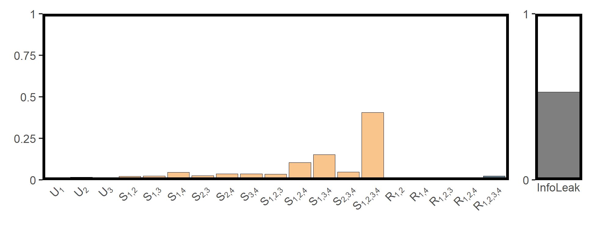
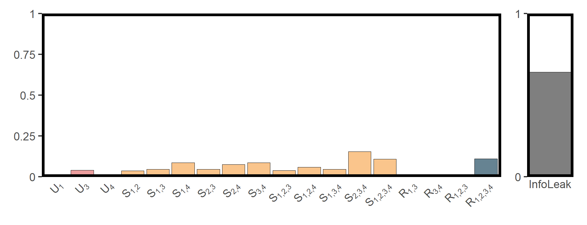
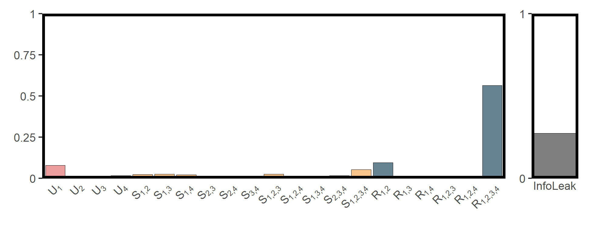

Synergistic-Unique-Redundant Decomposition of Causality (SURD)
Wenbo Lyu
Last
update: 2026-03-30
Last run: 2026-03-30
Source: Last run: 2026-03-30
vignettes/surd.Rmd
surd.RmdIntroduction
Understanding how causal influences combine and interact is essential for both temporal and spatial systems. The Synergistic–Unique–Redundant Decomposition (SURD) framework provides a principled way to break down total information flow between variables into:
- Unique contributions — information uniquely provided by one driver;
- Redundant contributions — information shared by multiple drivers;
- Synergistic contributions — information only revealed when drivers are considered together.
This vignette demonstrates how to perform SURD analysis using the
infoxtr package. We will explore both temporal and spatial
cases, showing how infoxtr unifies
time-series and spatial
cross-sectional causal analysis via consistent interfaces to
data.frame, sf, and SpatRaster
objects.
Utility Functions
To simplify visualization, a plotting function is provided below, which produces a SURD decomposition plot — a grouped bar chart of unique (U), synergistic (S), and redundant (R) components, along with a side panel showing the information leak.
utils_plot_surd = \(surd_list,threshold = 0,style = "shallow") {
df = surd_list |>
tibble::as_tibble() |>
dplyr::filter(vars != "InfoLeak")
if(threshold > 0){
df = dplyr::filter(df, values > threshold)
}
df = df |>
dplyr::mutate(
var_nums = stringr::str_extract_all(vars, "(?<=V)\\d+"),
nums_joined = sapply(var_nums, \(x) paste(x, collapse = '*","*')),
vars_formatted = paste0(types, "[", nums_joined, "]"),
type_order = dplyr::case_when(
types == "U" ~ 1,
types == "S" ~ 2,
types == "R" ~ 3
),
var_count = lengths(var_nums)
) |>
dplyr::arrange(type_order, var_count) |>
dplyr::mutate(vars = factor(vars_formatted, levels = unique(vars_formatted)))
if (style == "shallow") {
colors = c(U = "#ec9e9e", S = "#fac58c", R = "#668392", InfoLeak = "#7f7f7f")
} else {
colors = c(U = "#d62828", S = "#f77f00", R = "#003049", InfoLeak = "gray")
}
p1 = ggplot2::ggplot(df, ggplot2::aes(x = vars, y = values, fill = types)) +
ggplot2::geom_col(color = "black", linewidth = 0.15, show.legend = FALSE) +
ggplot2::scale_fill_manual(name = NULL, values = colors) +
ggplot2::scale_x_discrete(name = NULL, labels = function(x) parse(text = x)) +
ggplot2::scale_y_continuous(name = NULL, limits = c(0, 1), expand = c(0, 0),
breaks = c(0, 0.25, 0.5, 0.75, 1),
labels = c("0", "0.25", "0.5", "0.75", "1") ) +
ggplot2::theme_bw() +
ggplot2::theme(
axis.ticks.x = ggplot2::element_blank(),
axis.text.x = ggplot2::element_text(angle = 45, hjust = 1),
panel.grid = ggplot2::element_blank(),
panel.border = ggplot2::element_rect(color = "black", linewidth = 2)
)
df_leak = dplyr::slice_tail(tibble::as_tibble(surd_list), n = 1)
p2 = ggplot2::ggplot(df_leak, ggplot2::aes(x = vars, y = values)) +
ggplot2::geom_col(fill = colors[4], color = "black", linewidth = 0.15) +
ggplot2::scale_x_discrete(name = NULL, expand = c(0, 0)) +
ggplot2::scale_y_continuous(name = NULL, limits = c(0, 1), expand = c(0, 0),
breaks = c(0,1), labels = c(0,1) ) +
ggplot2::theme_bw() +
ggplot2::theme(
axis.ticks.x = ggplot2::element_blank(),
panel.grid = ggplot2::element_blank(),
panel.border = ggplot2::element_rect(color = "black", linewidth = 2)
)
patchwork::wrap_plots(p1, p2, ncol = 2, widths = c(10,1))
}To generate the visualization, please ensure the required packages are installed by running the following code:
if (!requireNamespace("dplyr")) install.packages("dplyr")
if (!requireNamespace("tibble")) install.packages("tibble")
if (!requireNamespace("stringr")) install.packages("stringr")
if (!requireNamespace("ggplot2")) install.packages("ggplot2")
if (!requireNamespace("patchwork")) install.packages("patchwork")Example Cases
The following sections demonstrate SURD decomposition in different contexts, illustrating its flexibility across temporal and spatial causal analyses.
Air Pollution and Cardiovascular Health in Hong Kong
cvd = readr::read_csv(system.file("case/cvd.csv",package = "tEDM"))
head(cvd)
## # A tibble: 6 × 5
## cvd rsp no2 so2 o3
## <dbl> <dbl> <dbl> <dbl> <dbl>
## 1 214 73.7 74.5 19.1 17.4
## 2 203 77.6 80.9 18.8 39.4
## 3 202 64.8 67.1 13.8 56.4
## 4 182 68.8 74.7 30.8 5.6
## 5 181 49.4 62.3 23.1 3.6
## 6 129 67.4 63.6 17.4 6.73
cvd_long = cvd |>
tibble::rowid_to_column("id") |>
tidyr::pivot_longer(cols = -id,
names_to = "variable", values_to = "value")
fig_cvds_ts = ggplot2::ggplot(cvd_long, ggplot2::aes(x = id, y = value, color = variable)) +
ggplot2::geom_line(linewidth = 0.5) +
ggplot2::labs(x = "Days (from 1995-3 to 1997-11)", y = "Concentrations or \nNO. of CVD admissions", color = "") +
ggplot2::theme_bw() +
ggplot2::theme(legend.direction = "horizontal",
legend.position = "inside",
legend.justification = c("center", "top"),
legend.background = ggplot2::element_rect(fill = "transparent", color = NA))
fig_cvds_ts
To investigate the causal influences of air pollutants on the
incidence of cardiovascular diseases, we performed SURD analysis using a
time lag step 3 and 10 discretization
bins.
res_cvds = infoxtr::surd(cvd, 1, 2:5,
lag = 15, bin = 10, threads = 6)
tibble::as_tibble(res_cvds)
## # A tibble: 20 × 3
## vars types values
## <chr> <chr> <dbl>
## 1 V1 U 0.00219
## 2 V2 U 0.0155
## 3 V3 U 0.00252
## 4 V1_V2 R 0.00345
## 5 V1_V4 R 0.000711
## 6 V1_V2_V3 R 0.00506
## 7 V1_V2_V4 R 0.00991
## 8 V1_V2_V3_V4 R 0.0269
## 9 V1_V2 S 0.0205
## 10 V1_V3 S 0.0224
## 11 V1_V4 S 0.0451
## 12 V2_V3 S 0.0256
## 13 V2_V4 S 0.0352
## 14 V3_V4 S 0.0366
## 15 V1_V2_V3 S 0.0350
## 16 V1_V2_V4 S 0.104
## 17 V1_V3_V4 S 0.151
## 18 V2_V3_V4 S 0.0467
## 19 V1_V2_V3_V4 S 0.404
## 20 InfoLeak InfoLeak 0.535The SURD results are shown in the figure below:
utils_plot_surd(res_cvds)
Population Density and Its Drivers in Mainland China
popd_nb = spdep::read.gal(system.file("case/popd_nb.gal",package = "spEDM"))
## Warning in spdep::read.gal(system.file("case/popd_nb.gal", package = "spEDM")): neighbour
## object has 4 sub-graphs
popd = readr::read_csv(system.file("case/popd.csv",package = "spEDM"))
popd_sf = sf::st_as_sf(popd, coords = c("lon","lat"), crs = 4326)
popd_sf
## Simple feature collection with 2806 features and 5 fields
## Geometry type: POINT
## Dimension: XY
## Bounding box: xmin: 74.9055 ymin: 18.2698 xmax: 134.269 ymax: 52.9346
## Geodetic CRS: WGS 84
## # A tibble: 2,806 × 6
## popd elev tem pre slope geometry
## * <dbl> <dbl> <dbl> <dbl> <dbl> <POINT [°]>
## 1 780. 8 17.4 1528. 0.452 (116.912 30.4879)
## 2 395. 48 17.2 1487. 0.842 (116.755 30.5877)
## 3 261. 49 16.0 1456. 3.56 (116.541 30.7548)
## 4 258. 23 17.4 1555. 0.932 (116.241 30.104)
## 5 211. 101 16.3 1494. 3.34 (116.173 30.495)
## 6 386. 10 16.6 1382. 1.65 (116.935 30.9839)
## 7 350. 23 17.5 1569. 0.346 (116.677 30.2412)
## 8 470. 22 17.1 1493. 1.88 (117.066 30.6514)
## 9 1226. 11 17.4 1526. 0.208 (117.171 30.5558)
## 10 137. 598 13.9 1458. 5.92 (116.208 30.8983)
## # ℹ 2,796 more rows
res_popd = infoxtr::surd(popd_sf, 1, 2:5,
lag = 3, bin = 10, nb = popd_nb, threads = 6)
tibble::as_tibble(res_popd)
## # A tibble: 19 × 3
## vars types values
## <chr> <chr> <dbl>
## 1 V1 U 0.00453
## 2 V3 U 0.0390
## 3 V4 U 0.00349
## 4 V1_V3 R 0.00872
## 5 V3_V4 R 0.00269
## 6 V1_V2_V3 R 0.00546
## 7 V1_V2_V3_V4 R 0.110
## 8 V1_V2 S 0.0361
## 9 V1_V3 S 0.0461
## 10 V1_V4 S 0.0866
## 11 V2_V3 S 0.0458
## 12 V2_V4 S 0.0749
## 13 V3_V4 S 0.0858
## 14 V1_V2_V3 S 0.0376
## 15 V1_V2_V4 S 0.0584
## 16 V1_V3_V4 S 0.0453
## 17 V2_V3_V4 S 0.154
## 18 V1_V2_V3_V4 S 0.107
## 19 InfoLeak InfoLeak 0.642
utils_plot_surd(res_popd)
Influence of Climatic and Topographic Factors on Net Primary Productivity (NPP) in Mainland China
npp = terra::rast(system.file("case/npp.tif", package = "spEDM"))
npp
## class : SpatRaster
## size : 404, 483, 5 (nrow, ncol, nlyr)
## resolution : 10000, 10000 (x, y)
## extent : -2625763, 2204237, 1877078, 5917078 (xmin, xmax, ymin, ymax)
## coord. ref. : CGCS2000_Albers
## source : npp.tif
## names : npp, pre, tem, elev, hfp
## min values : 164.00, 384.3409, -47.8194, -122.2004, 0.03390418
## max values : 16606.33, 23878.3555, 263.6938, 5350.4902, 44.90312195
res_npp = infoxtr::surd(npp,1, 2:5,
lag = 2, bin = 10, threads = 6)
tibble::as_tibble(res_npp)
## # A tibble: 22 × 3
## vars types values
## <chr> <chr> <dbl>
## 1 V1 U 0.0777
## 2 V2 U 0.000234
## 3 V3 U 0.0000114
## 4 V4 U 0.0164
## 5 V1_V2 R 0.0948
## 6 V1_V3 R 0.000828
## 7 V1_V4 R 0.00514
## 8 V1_V2_V3 R 0.0137
## 9 V1_V2_V4 R 0.0149
## 10 V1_V2_V3_V4 R 0.565
## # ℹ 12 more rows
utils_plot_surd(res_npp)
🧩 See also:
-
?infoxtr::surd()for function details. -
spEDMpackage for spatial empirical dynamic modeling. -
tEDMpackage for temporal empirical dynamic modeling.